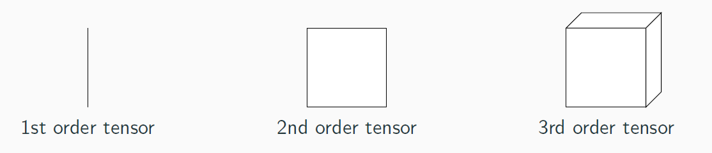
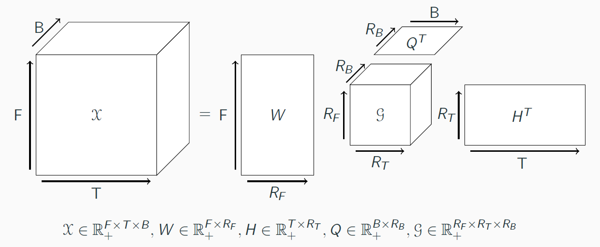
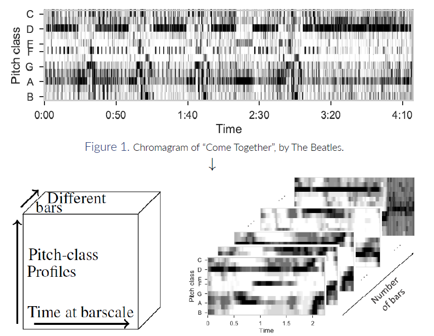

NTD: Nonnegative Tucker Decomposition
Tensors and NTD general model.
NTD is a tensor factorization technique.Formally, a tensor is a multi-dimensional array. In our work, we focus on 3-rd order tensor (at least for now).  As we focus on 3-rd order tensors, we will restrict "tensors" to 3-rd order ones.
Given a nonnegative tensor X, NTD decomposes it in three factor matrices, one per mode, and a core tensor linking these matrices. 
Application to Music.
Let's consider the spectrogram of a Music, that is a two-dimensional time-frequency (or frequency-ish representation) matrix.We split this matrix on each downbeat (in order to obtain a spectrogram for each bar of the song), and refold the obtain matrices in a tensor, with three dimensions. We can also see this operation as the concatenation of matrices along a third dimension.  In that sense, we obtain a tensor with two time dimensions: a low scale (inner-bar time), and an upper-scale (bar indexes). We then decompose this tensor with the NTD model.
Interpretation of NTD, in our context.
As the three factor matrices each represent a mode, each of them represent factors of a specific dimension. In our context:- - W represents frequency information, that is, each column of W will represent a frequential template. We then hope that each of these templates will represent an note, a chord, or at least a musically salient object.
- - H represents the inner-bar time, that is, each column of H will represent a time template, at the scale of a bar. It can be seen as a rhtyhmic template.
- - Q represents time at the barscale. It is hard to interpret Q without an understanding of the core tensor G, so we will come back to that right after.
 As presented above, each slice of the core tensor G will link columns of W and H, that is, frequential and rhythmic patterns.
Hence, each slice of G, mutiplied by W and H, is a time-frequency representation of some of their columns.
As presented above, each slice of the core tensor G will link columns of W and H, that is, frequential and rhythmic patterns.
Hence, each slice of G, mutiplied by W and H, is a time-frequency representation of some of their columns.It is then a spectrogram at the bar scale, composed of factorized elements. We call that representation a "musical pattern".
Each slice of G is associated with a column of Q. In that context, each column of Q indicates the weight of this musical pattern in all bars of the song.
Hence, Q is a barwise representation of the song, with musical pattern as features.
In practice: NTD for segmentation
Finally, starting from this representation, we developed and tested a segmentation algorithm, which resulted in a publication in ISMIR 2020.In short, the idea of the segmentation algorithm is to study this barwise representation Q, and notably its autosimilarity, to obtain barwise similarity coefficients. The higher a zone is in terms of similairty, the more probable it belongs to a same segment. Details about this segmentation technique can be found at this link
For more details, you should read the aformentioned article, and take a look at these notebooks, which are HTML uploads of our experimental results while developing the technique.
Beta-divergence and listenable examples.
Recently, we adapted the NTD to other metrics, from the beta-divergence family. In short, this family of divergences generalizes the Euclidean norm (beta = 2), the Kullback-Leibler divergence (beta = 1) and the Itakura-Saito divergence (beta = 0). These last two divergences are well-studied in audio signal processing.Details about this work can be found in our ICASSP 2022 submission (still under review), detailling the algorithm, or in these listenable results, which are signals reconstructed from the NTD results (both the entire song and each musical pattern), according to different beta values.
Note though that we used the Griffin-Lim algorithm to reconstruct signals (from the STFT), so reconstructed signals can contain artifacts or unpleasant parts.